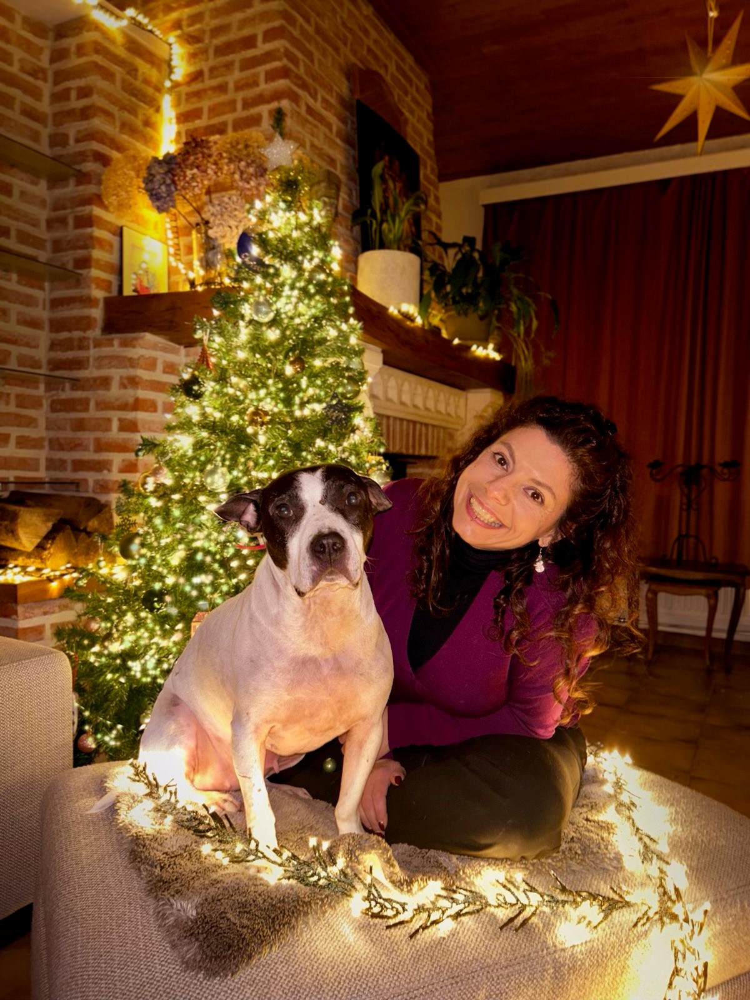

DELIA
En savoir plus Fermer ×
Barbara donne des nouvelles de Delia, qu’elle a adoptée en septembre 2023 sous le nom de Perdita. Malgré son passé difficile et ses nombreux problèmes comportementaux, elle a décidé de ne pas abandonner.
Delia présente notamment des réactions face à certaines situations et souffre d’anxiété lorsqu’elle reste seule. Plusieurs suivis comportementaux et traitements médicamenteux ont été essayés, sans réel succès.
Face aux dégâts causés dans son ancien logement, Barbara a finalement acheté une maison en avril. Elle a appris à adapter son quotidien et celui de ses enfants aux besoins spécifiques de Delia. Elle prend de nombreuses précautions pour éviter tout accident.
Depuis le déménagement, elle constate même une amélioration concernant la propreté. Elle considère Delia comme un chien ayant un handicap nécessitant une attention particulière.
Enfin, elle insiste sur l’importance d’une adoption responsable et d’une bonne sélection des adoptants afin d’éviter les abandons.